set.seed(2026)library(UnitCircle) # raices respecto al circulo unitariolibrary(forecast) # acf/pacf y raíceslibrary(ggplot2)library(kableExtra) # para tablas#funcion para tablas mas bonitastabKable <-function(tabla,cap=""){ tabla %>%kbl(booktabs =TRUE, align ="c",caption = cap) %>%#Evitamos que cambie de posición kable_styling(latex_options =c("hold_position")) } par_default <-par(no.readonly =TRUE)
Modelos Autoregresivos \(AR(p)\)
Un proceso \(\{X_t\}\) es autoregresivo de orden \(p\) si satisface la ecuación:
El proceso es estacionario de segundo orden si todas las raíces de \(\Phi(B)\) caen fuera del círculo unitario, es decir \(|z_i| > 1\) para toda \(z\) que cumpla \(\Phi(z)=0\) . En ese caso existe la representación \(MA(\infty)\)
Para un modelo \(AR(1)\), el polinomio de retraso es \(\Phi(B) = 1-\phi B\) y la única raíz es \(z = 1/\phi\), entonces la condición para que sea estacionario de segundo orden es que \(|z|>1\), y es equivalente a que \(|\phi|<1\). Si se cumple lo anterior, entonces:
Si \(0<\phi<1\) la ACF decae monótonamente; si \(-1<\phi<0\) decae alternando signo.
Mientras que la PACF queda determinada por: \[
\alpha(1) = \phi, \qquad \alpha(h) = 0 \quad \text{para } h>1 .
\]
Podemos obtener las funciones de autocorrelación teóricas para un modelo completamente especificado, con la función ARMAacf(). A continuación se muestra un ejemplo para el modelo \(AR(1)\) con \(\phi = 0.8\) y \(\phi = - 0.8\), se puede ver que en el segundo caso la ACF oscila y en la PACF el único valor es para el rezago \(1\) pero con signo negativo.
Code
# rezago maximo en la graficah <-20# ACF y PACF teoricas con ARMAacf()acf_ar_pos <-ARMAacf(ar =0.8, lag.max = h)pacf_ar_pos <-ARMAacf(ar =0.8, lag.max = h, pacf =TRUE)acf_ar_neg <-ARMAacf(ar =-0.8, lag.max = h)pacf_ar_neg <-ARMAacf(ar =-0.8, lag.max = h, pacf =TRUE)par(mfrow =c(2, 2), mar =c(4, 4, 3, 1))plot(0:h, acf_ar_pos, type ="h", lwd =2, col ="steelblue",xlab ="Rezago h", ylab =expression(rho(h)),main =expression(paste("ACF teórica AR(1), ", phi ==0.8)))abline(h =0)plot(1:h, pacf_ar_pos, type ="h", lwd =2, col ="firebrick",xlab ="Rezago h", ylab =expression(alpha(h)), ylim =c(-1, 1),main =expression(paste("PACF teórica AR(1), ", phi ==0.8)))abline(h =0)plot(0:h, acf_ar_neg, type ="h", lwd =2, col ="steelblue",xlab ="Rezago h", ylab =expression(rho(h)),main =expression(paste("ACF teórica AR(1), ", phi ==-0.8)))abline(h =0)plot(1:h, pacf_ar_neg, type ="h", lwd =2, col ="firebrick",xlab ="Rezago h", ylab =expression(alpha(h)), ylim =c(-1, 1),main =expression(paste("PACF teórica AR(1), ", phi ==-0.8)))abline(h =0)
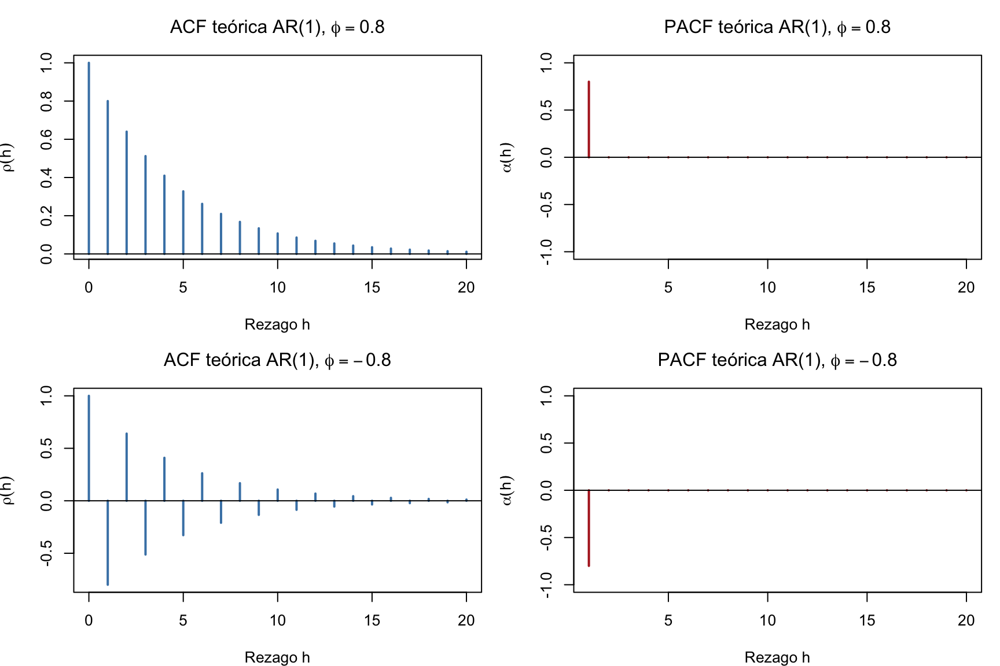
Code
par(par_default)
También podemos obtener las versiones muestrales sobre una realización del mismo proceso, con las funciones acf() y pacf() de R base y Acf() de forecast
Code
x_ar2 <-arima.sim(n =500, model =list(ar =c(0.8)))par(mfrow =c(2, 2), mar =c(4, 4, 3, 1))plot(x_ar2, main ="Realización de un AR(1)", ylab =expression(X[t]))acf(x_ar2, main ="ACF muestral (R base)")pacf(x_ar2, main ="PACF muestral (R base)")forecast::Acf(x_ar2, main ="ACF (forecast) (sin rezago 0)")
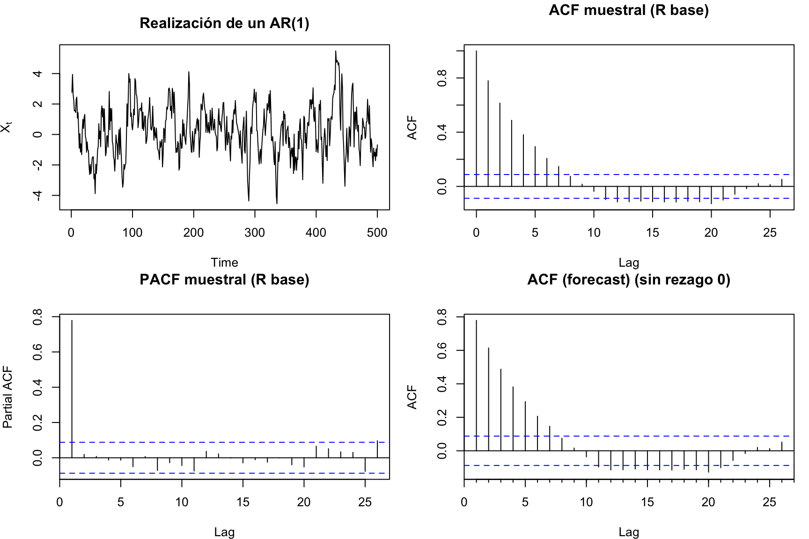
Code
par(par_default)
Raíces del polinomio
Para saber si el modelo \(AR(p)\) es estacionario de segundo orden, analizamos las raíces del polinomio de retraso
La función polyroot() recibe los coeficientes \((1,- \phi_1, ..., - \phi_p)\) y devuelve las raíces del polinomio. Otra forma es visualizar las raices, en esta gráfica queremos que los puntos estén fuera del círculo unitario. Para ilustrar estos métodos, supongamos un modelo \(AR(1)\) con \(\phi = 0.8\)
real complex outside
1 1.25 0 TRUE
*Results are rounded to 6 digits.
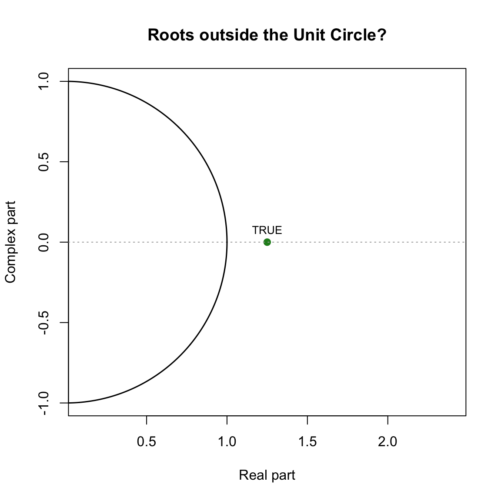
Por último, la función autoplot de la paquetería forecast.
Code
# forecast grafica las raices INVERSAS (deben quedar DENTRO del circulo)fit_ar2 <-Arima(x_ar2, order =c(1, 0, 0), include.mean =FALSE)autoplot(fit_ar2) +ggtitle("Raíces inversas de AR(1) con phi=0.8 ")
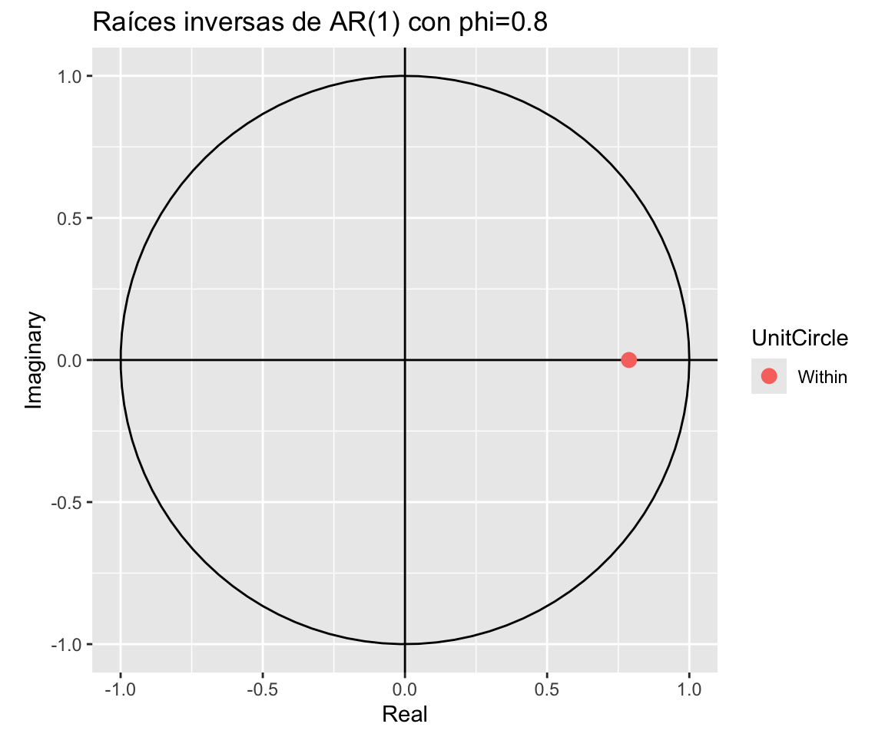
Note
polyroot() y UnitCircle grafican las raíces \(z_i\): la condición es \(|z_i|>1\) (fuera del círculo). forecast::autoplot() grafica las raíces inversas\(1/z_i\): la condición equivalente es que caigan dentro del círculo.
Simulación
Podemos simular un modelo \(AR(1)\) con \(X_0 = 0\) y \(Z_t \sim GWN(0,1)\) con distintos valores del parámetro de persistencia \(\phi\) para ilustrar lo que pasa cuando está dentro del circulo unitario o fuera de él.
También podemos analizar las funciones de autocorrelación de dichas series.
Code
par(mfrow =c(1, 3), mar =c(4, 4, 3, 1))acf(x_est, main =expression(phi ==0.7))acf(x_unit, main =expression(phi ==1))acf(x_exp, main =expression(phi ==1.05))
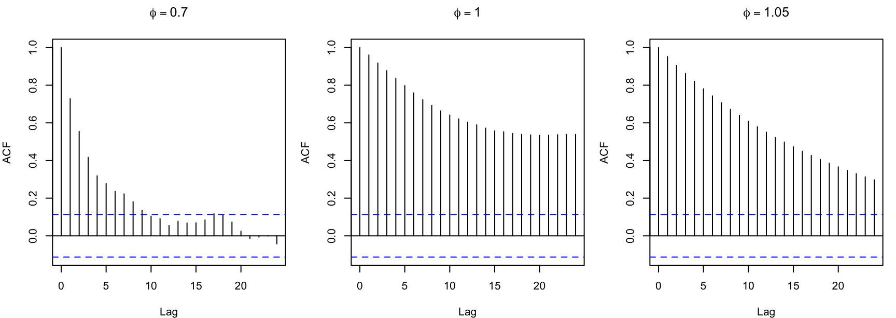
Code
par(par_default)
Modelos de Medias Móviles \(MA(q)\)
Un proceso \(\{X_t\}\) es de medias móviles de orden \(q\) si satisface la ecuación:
Para este modelo, la propiedad no trivial es la invertibilidad: que las raíces de \(\Theta(B)\) caigan fuera del círculo unitario, es decir \(|z_i|>1\). Eso permite escribir la representación \(AR(\infty)\)
\[
\Theta^{-1}(B) X_t = Z_t
\]
Para un modelo \(MA(1)\) dado por \(\Theta(B)=1+\theta B\), la raíz es \(z=-1/\theta\) y la invertibilidad equivale a \(|\theta|<1\).
Sabemos que \(|\rho(1)|\le 1/2\) siempre, y que \(\theta\) y \(1/\theta\) producen la misma ACF (problema de identificación que resuelve la invertibilidad: se elige la raíz con \(|\theta|<1\)).
Por último, la comprobación de la no identificación entre \(\theta\) y \(1/\theta\) mediante la ACF teórica de un proceso \(MA(q)\) con \(\theta=0.5\) y \(\theta=2\), además de una versión muestral del ACF de un \(MA(2)\) que se corta tras el rezago 2, y la PACF que decae.
Code
# misma ACF para theta = 0.5 y theta = 2rbind(theta_0.5 =ARMAacf(ma =0.5, lag.max =3),theta_2 =ARMAacf(ma =2.0, lag.max =3))
0 1 2 3
theta_0.5 1 0.4 0 0
theta_2 1 0.4 0 0
Code
x_ma2 <-arima.sim(n =500, model =list(ma =c(0.7, 0.4)))par(mfrow =c(2, 2), mar =c(4, 4, 3, 1))plot(x_ma2, main ="Realización MA(2)", ylab =expression(X[t]))acf(x_ma2, main ="ACF muestral (R base)")pacf(x_ma2, main ="PACF muestral (R base)")forecast::Pacf(x_ma2, main ="Pacf() de forecast")
y la condición \(|z_i|>1\) corresponde a invertibilidad. Usamos polyroot() para encontrar las raíces (los coeficientes van con **signo positivo \((1, \theta_1, \dots, \theta_q)\) )
plot_raices(raices_ma_ni, expression(paste("MA(1) con ", theta ==1.5, ": no invertible")))
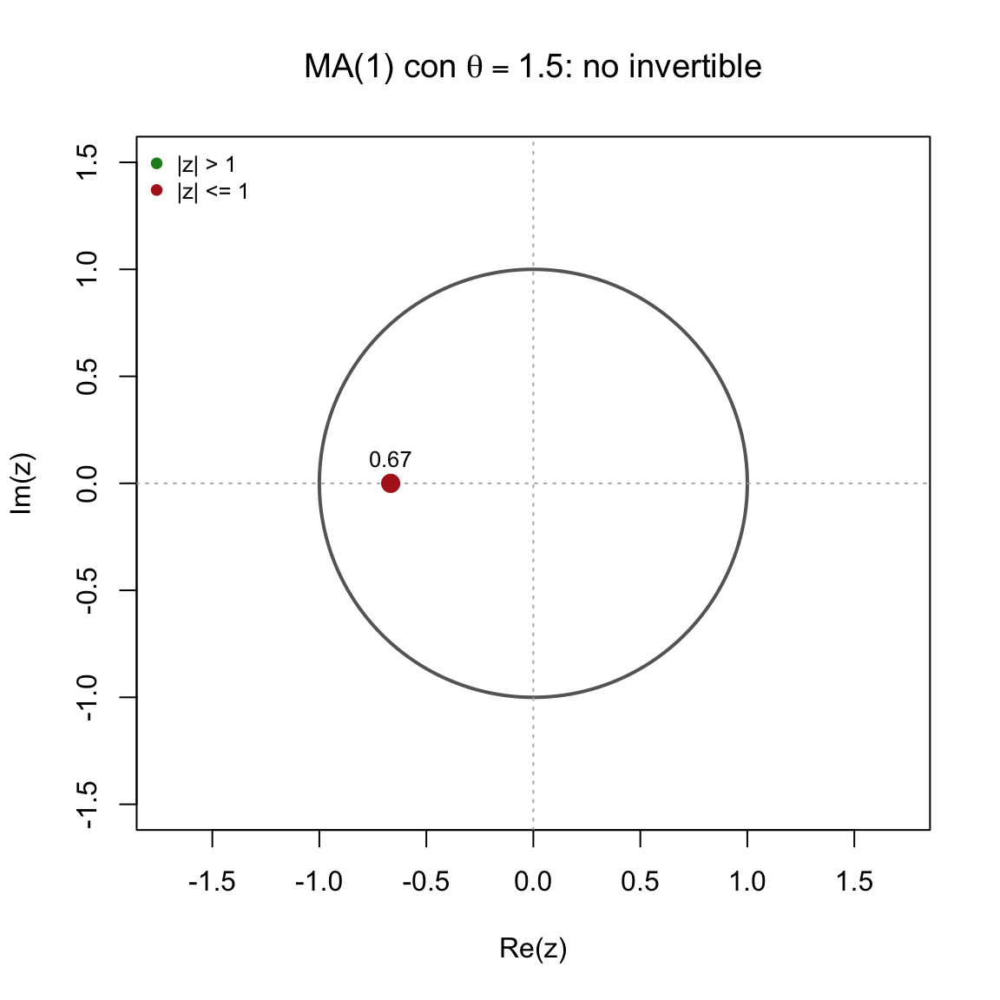
Simulación
Simulamos un \(MA(1)\): \(X_t = Z_t + \theta Z_{t-1}\) con tres valores de \(\theta\). Usamos filter() para poder incluir \(|\theta|\ge 1\) (todos son estacionarios, pero sólo el primero es invertible).
Code
sim_ma1 <-function(n, theta, sd =1) { z <-rnorm(n +1, sd = sd)ts(stats::filter(z, filter =c(1, theta), method ="convolution", sides =1)[-1])}m_inv <-sim_ma1(n, theta =0.8) # |theta| < 1 -> invertiblem_unit <-sim_ma1(n, theta =1.0) # |theta| = 1 -> frontera, no invertiblem_noinv <-sim_ma1(n, theta =1.25) # |theta| > 1 -> no invertiblepar(mfrow =c(3, 1), mar =c(4, 4, 3, 1))plot(m_inv, ylab =expression(X[t]), col ="steelblue",main =expression(paste("MA(1) con ", theta ==0.8, ": estacionario e invertible")))abline(h =0, lty =2)plot(m_unit, ylab =expression(X[t]), col ="darkorange",main =expression(paste("MA(1) con ", theta ==1, ": raíz unitaria en Theta(B)")))abline(h =0, lty =2)plot(m_noinv, ylab =expression(X[t]), col ="firebrick",main =expression(paste("MA(1) con ", theta ==1.25, ": estacionario, no invertible")))abline(h =0, lty =2)
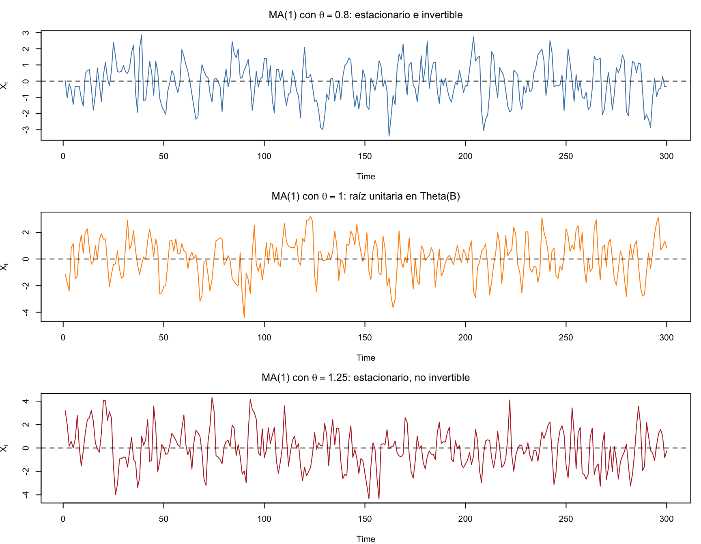
Code
par(par_default)
También podemos analizar las funciones de autocorrelación de los procesos anteriores.
Code
par(mfrow =c(1, 3), mar =c(4, 4, 3, 1))acf(m_inv, main =expression(theta ==0.8))acf(m_unit, main =expression(theta ==1))acf(m_noinv, main =expression(theta ==1.25))
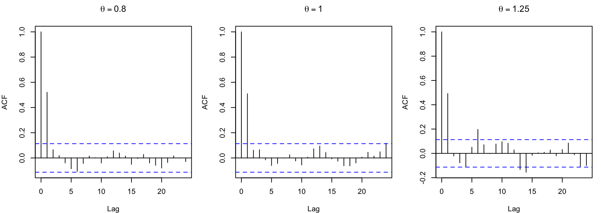
Code
par(par_default)
A diferencia del \(AR(1)\), ninguna de las tres trayectorias explota, pues el \(MA(1)\) es estacionario para cualquier \(\theta\). Lo que cambia es la invertibilidad, y con ella la posibilidad de recuperar \(Z_t\) a partir del pasado observado de \(X_t\). Además \(\theta=0.8\) y \(\theta=1/0.8=1.25\) generan las mismas ACF, por lo que sólo la versión invertible es identificable en la estimación.
Modelos \(ARMA(p,q)\)
Un proceso \(\{X_t\}\) es \(ARMA(p,q)\) si satisface la siguiente ecuación:
Las funciones de autocorrelación serán heredadas de cada componente, es decir, la ACF será heredada del componente \(MA(q)\) y la PACF será heredada del \(AR(q)\), esto nos ayudará a identificar los parámetros del modelo posteriormente.
Expresión para ARMA(p,q)
Una tabla que ayuda a la identificación:
Modelo
ACF
PACF
\(AR(p)\)
decae
se corta en \(p\)
\(MA(q)\)
se corta en \(q\)
decae
\(ARMA(p,q)\)
decae (tras \(q\))
decae (tras \(p\))
Ninguna de las dos funciones se corta, por lo que en la práctica el orden se elige con criterios de información (AIC/BIC). En R la función que ayuda a estimar los parámetros del modelo es forecast::auto.arima().
auto.arima()
La función que nos ayudará a realizar la estimación de los parámetros para una serie de tiempo observada es auto.arima() de la paquetería forecast.
La función que nos ayuda a simular observaciones de un proceso completamente especficiado es arima.sim. Una limitante es que solo permite simular procesos estacionarios.
Expresión para ARMA(1,1)
Con \(X_t = \phi X_{t-1} + Z_t + \theta Z_{t-1}\) y \(|\phi|<1\):
Es decir, la ACF decae geométricamente a tasa \(\phi\) a partir del rezago 1, pero con un “arranque” distinto al del \(AR(1)\) puro. Si \(\theta=0\) se recupera \(\rho(h)=\phi^h\); si \(\phi=0\) se recupera la ACF del \(MA(1)\).
Ejemplos
Code
acf_arma <-ARMAacf(ar =0.7, ma =0.4, lag.max = h)pacf_arma <-ARMAacf(ar =0.7, ma =0.4, lag.max = h, pacf =TRUE)acf_arma2 <-ARMAacf(ar =-0.6, ma =0.5, lag.max = h)pacf_arma2 <-ARMAacf(ar =-0.6, ma =0.5, lag.max = h, pacf =TRUE)par(mfrow =c(2, 2), mar =c(4, 4, 3, 1))plot(0:h, acf_arma, type ="h", lwd =2, col ="steelblue",xlab ="Rezago h", ylab =expression(rho(h)),main =expression(paste("ACF ARMA(1,1): ", phi ==0.7, ", ", theta ==0.4)))abline(h =0)plot(1:h, pacf_arma, type ="h", lwd =2, col ="firebrick",xlab ="Rezago h", ylab =expression(alpha(h)), ylim =c(-1, 1),main =expression(paste("PACF ARMA(1,1): ", phi ==0.7, ", ", theta ==0.4)))abline(h =0)plot(0:h, acf_arma2, type ="h", lwd =2, col ="steelblue",xlab ="Rezago h", ylab =expression(rho(h)),main =expression(paste("ACF ARMA(1,1): ", phi ==-0.6, ", ", theta ==0.5)))abline(h =0)plot(1:h, pacf_arma2, type ="h", lwd =2, col ="firebrick",xlab ="Rezago h", ylab =expression(alpha(h)), ylim =c(-1, 1),main =expression(paste("PACF ARMA(1,1): ", phi ==-0.6, ", ", theta ==0.5)))abline(h =0)
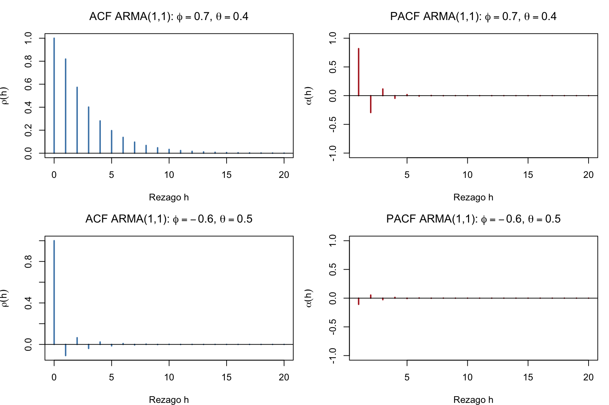
Code
par(par_default)
Verificación numérica de la fórmula de \(\rho(1)\) y decaimiento geométrico:
real complex outside
1 -1.166667 1.404358 TRUE
2 -1.166667 -1.404358 TRUE
*Results are rounded to 6 digits.
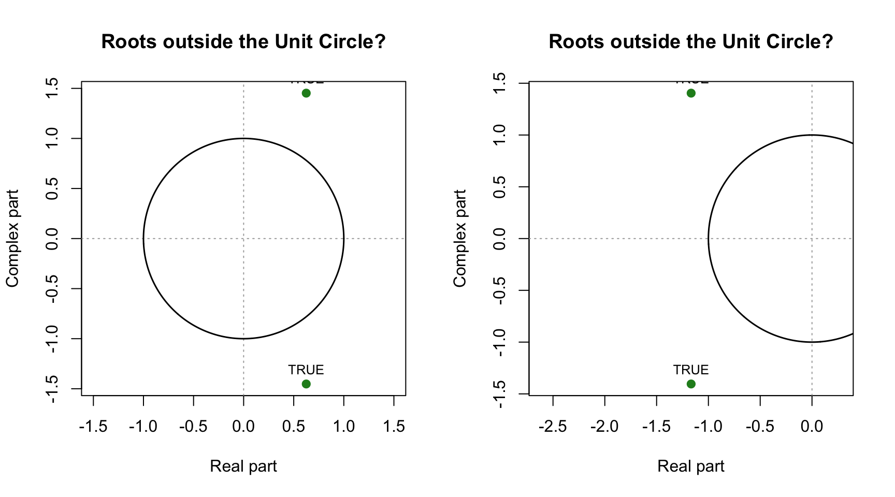
Code
par(par_default)
Code
fit_arma <-Arima(x_arma, order =c(1, 0, 1), include.mean =FALSE)autoplot(fit_arma) +ggtitle("Raíces inversas AR y MA del ARMA(1,1) estimado")
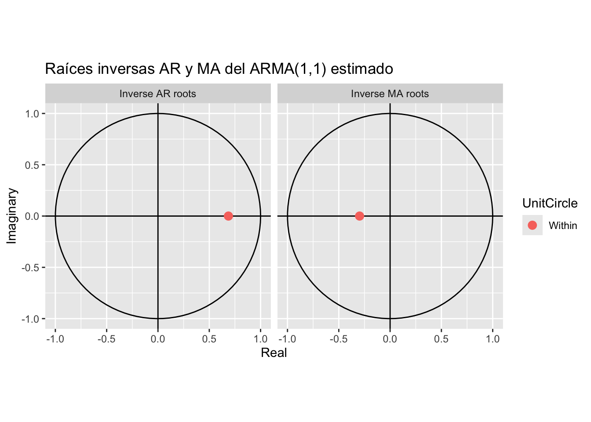
Si alguna raíz inversa quedara sobre o fuera del círculo, el modelo estimado sería no causal o no invertible y habría que reconsiderar el orden o diferenciar la serie.
Simulacion
Simulamos \(ARMA(1,1)\): \(X_t = \phi X_{t-1} + Z_t + \theta Z_{t-1}\), con una recursión propia que admite valores fuera de la región causal/invertible.
Un cuarto caso ilustra el problema de invertibilidad manteniendo la estacionariedad, y un quinto la cancelación de raíces comunes:
Code
a_noinv <-sim_arma11(n, phi =0.7, theta =1.5) # estacionario, no invertiblea_cancel <-sim_arma11(n, phi =0.6, theta =-0.6) # Phi y Theta comparten raiz -> ruido blancopar(mfrow =c(2, 2), mar =c(4, 4, 3, 1))plot(a_noinv, ylab =expression(X[t]), col ="purple4",main =expression(paste(phi ==0.7, ", ", theta ==1.5, ": no invertible")))acf(a_noinv, main ="ACF")plot(a_cancel, ylab =expression(X[t]), col ="darkgreen",main =expression(paste(phi ==0.6, ", ", theta ==-0.6, ": raíces comunes")))acf(a_cancel, main ="ACF (se ve como ruido blanco)")
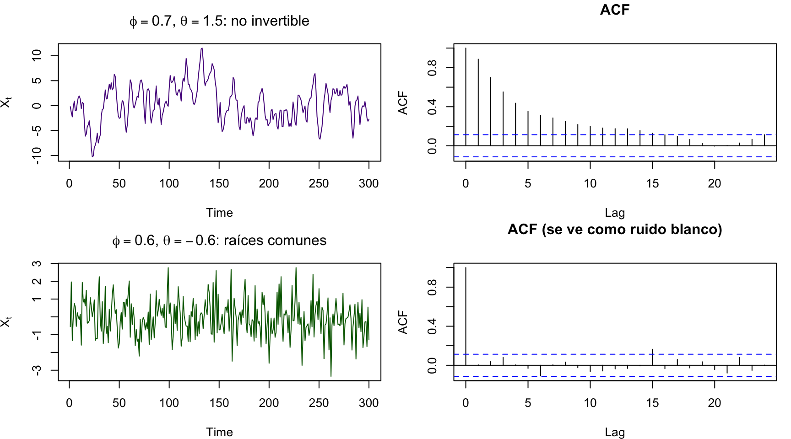
Code
par(par_default)
En el último panel, \(\Phi(B)=1-0.6B\) y \(\Theta(B)=1-0.6B\) se cancelan y el proceso es, en realidad, ruido blanco: un recordatorio de por qué conviene verificar que los dos polinomios no compartan raíces antes de interpretar los parámetros estimados.